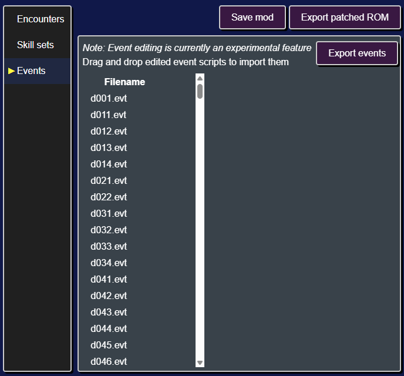
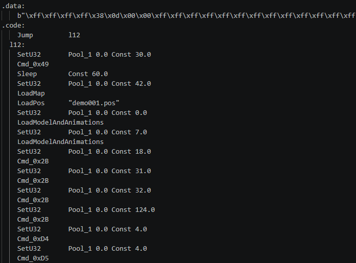
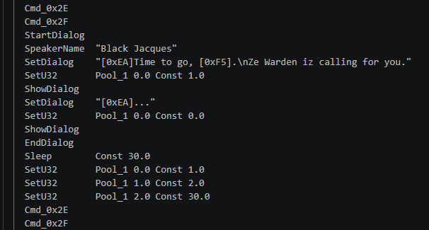
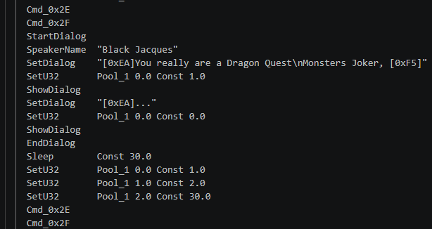
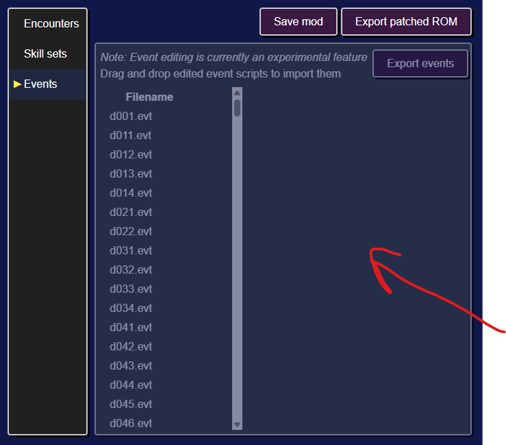
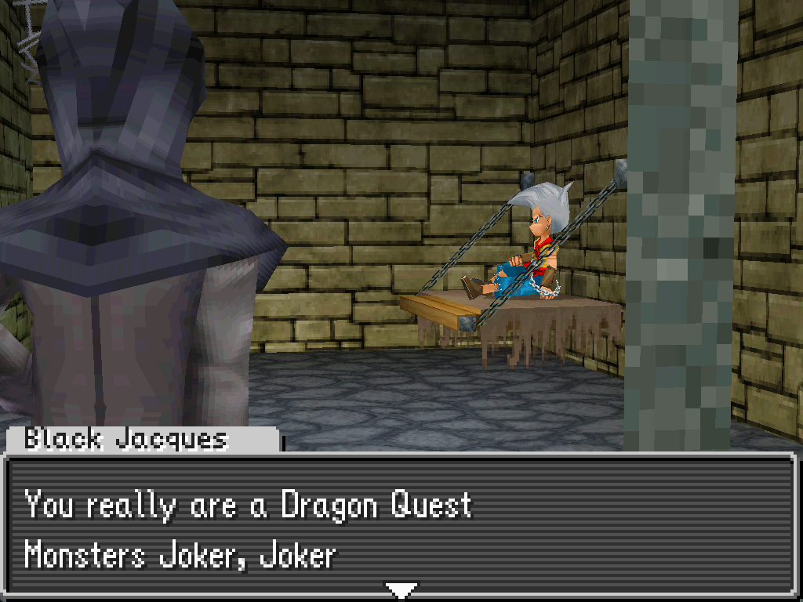

Modifying event scripts
Event scripts are files that control cutscenes and overworld interactions.
Editing event scripts will enable you to:
- Add new cutscenes
- Make changes to existing cutscenes
- Make changes to overworld logic
- and more!

Modifying an existing cutscene
As an example, let's change the dialogue in the opening cutscene.
Exporting event scripts
First we'll need to export the game's event scripts.
After clicking on the "Events" tab, you'll see a list of event scripts on the left.
We can export all the scripts in one go by clicking on the Export events button and selecting a directory to write the scripts to.
Editing the event
Next we'll need to find the event script for the opening cutscene.
Each of the event scripts starts with a prefix, in particular all cutscene script start with demo. In our case we need to edit demo001.evt.dqmj1_asm. The .dqmj1_asm extensions indicates that this is a disassembled event script for DQMJ1.
You can open up demo001.evt.dqmj1_asm in Notepad, VS Code, or any other text editor.

You can see that the file is divided into two sections: (1) a data section, and (2) a code section. For now we're only interested in the code section.
Each line of the code section is an instruction (ex. Sleep Const 60.0), which consists of a name (ex. Sleep) and arguments (ex. Const 60.0).
Since we want to modify some dialog, we can look through the file until we find an instruction that contains dialog. In particular looking for any instruction with the name SetDialog.

Let's go ahead and change the text for the first SetDialog instruction.

Then save the modified event script.
Importing the modified event
Next we need to import the modified event script back into the ROM editor.
To do this, select the modified demo001.evt.dqmj1_asm file in your file browser and click and drag it onto the main section of the ROM editor.

Then save the mod, export the ROM, and start a new game.
During the opening cutscene you'll see the updated dialog.
